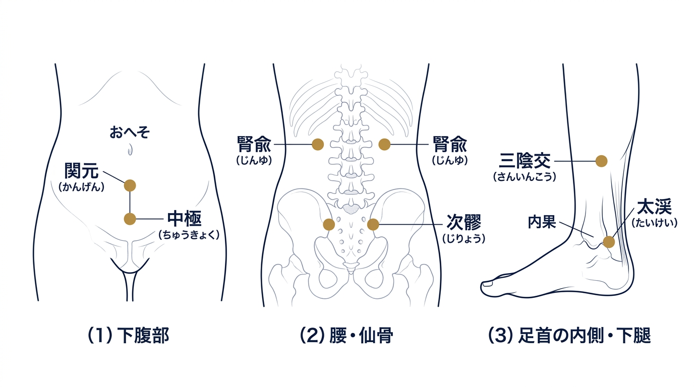

尿毒症の鍼灸
緊急透析と腎臓専門医の管理が必須で急性期鍼灸は禁忌です。透析安定期・主治医許可下のQOL維持のみ慎重に支えます。
まず知っておきたい要点と施術方針
腎機能が正常の約10分の1以下に著しく低下した末期腎不全において、尿として排泄されるべき老廃物や毒素が体内に蓄積する命に関わる状態です。糖尿病や高血圧による慢性腎臓病、急性腎障害、尿路閉塞、自己免疫疾患などが原因となります。全身のむくみ、呼吸困難、嘔吐、貧血、不整脈、意識障害や痙攣を引き起こすため、血液透析・腹膜透析・腎移植などの専門医療が不可欠であり、急性期や未治療期の鍼灸は禁忌です。（公式解説）
このようなお悩みはありませんか？
- ✓強い倦怠感や全身のむくみ・息苦しさがある
- ✓食欲不振や吐き気・嘔吐が続いている
- ✓全身の皮膚のかゆみや貧血症状がつらい
- ✓透析中の冷えやだるさを安全に和らげたい
当院の施術アプローチ
院長YouTube解説・関連動画
尿毒症では、全身の色々な臓器に色々な症状が現れる
尿毒症では、全身の色々な臓器に色々な症状が現れます。尿毒症によって現れる症状や程度は、腎機能がどのくらい下がっているのかなどによって変わります。
初期段階では、倦怠感や疲れやすさなどが現れます。さらに、全身の浮腫や息苦しさ、食欲の低下、吐き気、下痢、皮膚のかゆみや出血、視力障害など様々な症状が現れてきます。中枢神経系への大きく影響すると、痙攣が現れることもあります。
尿毒症では貧血が進むこともあります。そのため、貧血によって起きる症状である動悸や運動した時の疲れなども現れます。他にも、不整脈が起こったり骨の代謝に影響が出たりすることも見られます。
そのまま放っておいてしまうと、心不全や昏睡状態などにつながり、命に危険が及ぶことになります。
尿毒症は、腎機能障害により体内に有毒な廃棄物が蓄積する状態です。これにより、多くの場合、以下のような症状が発生します。
疲労感と弱さ:体内の毒素蓄積により、一般的な疲労感や弱さが生じます。
変更された精神状態:集中力の低下、混乱、意識の変化などの神経系に関連する症状が現れることがあります。
吐き気と嘔吐:体内の毒素が消化器系に影響を与え、吐き気や嘔吐を引き起こすことがあります。
食欲不振:体内の毒素が食欲を減少させることがあります。
体重減少:食欲不振や吸収不良により、体重が減少することがあります。
尿量の変化:尿量の減少や尿が全く出なくなることがあります。一方で、過剰に尿が出ることもあります。
腫れ（浮腫）:足、足首、手などが腎機能不全による余分な液体の蓄積で腫れることがあります。
皮膚の変化:かゆみや乾燥した皮膚が生じることがあります。
呼吸困難:肺に余分な液体が蓄積し、呼吸が困難になることがあります。
高血圧:腎機能障害は血圧を上昇させることがあります。
尿毒症は重篤な状態であり、適切な介入が不可欠です。
尿毒症の主な改善方法は、血液透析、連続携行式腹膜透析、腎移植などです。
透析は、体の中にたまった老廃物や余分な水分を腎臓の代わりの取り除くために行います。腎移植を行なった場合、腎臓の機能自体が回復するため、予後は良いです。
尿毒症は腎機能障害が進行し、体内に尿素などの毒素が蓄積した状態を指します。尿毒症の改善は、機能不全の進行を遅らせ、症状を管理することに重点を置きます。以下に主な改善法を紹介します。
血液透析: 血液を機械を通して浄化し、余分な水分や毒素を除去します。通常、週に数回のセッションが必要です。
腹膜透析: 腹膜を使用して体内の毒素を除去します。この方法は自宅で行うことができ、より柔軟なスケジュールが可能です。
高血圧や糖尿病など、基礎となる健康問題の管理に用いられます。腎機能を保護するためにACE阻害剤やARBを使用することがあります。高リン血症を管理するためにリン結合剤を使用することがあります。
高リン、高カリウム、高ナトリウムの食品を制限し、たんぱく質の摂取量を調整します。水分摂取量の調整も必要になる場合があります。
・腎移植
腎機能が大幅に低下している場合、最終的な治療法として腎移植が考慮されることがあります。
・症状の管理
疲労感、皮膚のかゆみ、骨の問題などの症状に対処します。
尿毒症の改善に使用される薬は、症状の緩和と基礎となる腎障害の進行を遅らせることを目的としています。以下に、尿毒症改善における主な薬剤を挙げます。
・高血圧薬
腎機能障害を伴う高血圧を管理するために、ACE阻害剤（例：エナラプリル、リシノプリル）やアンジオテンシンII受容体拮抗薬（ARB）（例：ロサルタン、バルサルタン）が使用されます。
・リン結合剤
腎不全により血中リンが増加するのを防ぐために使用されます。例えばセベラマー、カルシウムアセテートなどがあります。
・エリスロポエチン刺激剤
慢性腎不全による貧血の改善のために用いられます。例えばエポエチン・アルファ（エポジン）やダルベポエチン・アルファ（アラネスプ）など。
・ビタミンDとその類似体
二次性副甲状腺機能亢進症の治療や骨の代謝を正常化するために使用されます。例えばカルシトリオール、パーカルシトールなど。
・利尿剤
余分な水分とナトリウムの排出を促進するために使用されます。ループ利尿剤（例：フロセミド）が一般的です。
・カリウム結合剤
高カリウム血症を管理するために使用されることがあります。
これらの薬剤はそれぞれ異なる副作用を持つ可能性がありますので、医師の指示に従って使用することが重要です。
尿毒症を予防するためには、腎臓の機能が下がらないように日頃から注意することが大切です。
日常生活の中で、適度な運動をすることや、太りすぎたり痩せすぎたりしないように体重をコントロールすること、塩分を摂りすぎないこと、禁煙することなどを心がけましょう。
場合によって、降圧剤や血糖降下剤、高脂血症薬なども使って腎臓の機能の低下を防ぎましょう。
ツボの位置と押し方
湧泉は、土踏まずの前の方の中央にあるツボです。足の指を曲げたとき、１番大きくへこむところにあります。
押すときは親指を使います。押すときの力加減は少し強めがおすすめです。
太谿の場所は、内くるぶしとアキレス腱の間です。探すときは、内くるぶしとアキレス腱の間を触り、へこみを探しましょう。
押すときは親指を重ねてしっかり押します。約７秒間ほどしっかりと圧を加えると良いでしょう。
築賓の場所は、ふくらはぎの内側です。内くるぶしから指5本分上に上がったところにあります。
押すときは5回ほど連続で押す動作を3回ほど繰り返すことがおすすめです。

泌尿器のお悩みのツボ図解とセルフケア
実際の施術ではお一人おひとりの体質・症状に合わせて選穴しますが、泌尿器領域（腹圧性尿失禁・過活動膀胱・慢性前立腺炎/CPPS）の臨床でよく用いられる代表的なツボの目安です。

📌 代表的なツボの詳細一覧表を開く（6穴） ▼
| ツボ名 | 位置の目安 | 主な狙い | セルフケアの注意点 |
|---|---|---|---|
| 中極（ちゅうきょく） | おへそから指5本分下、恥骨上縁のすぐ上 | 膀胱の募穴。排尿調整・下腹部の冷え・頻尿ケア | 温灸・手当て推奨。妊娠中は刺激禁忌 |
| 関元（かんげん） | おへそから指4本分下 | 骨盤内の血流促進・下焦（腎・膀胱）の補益 | 排尿後の温かい手当てが安全。妊娠中は刺激禁忌 |
| 次髎（じりょう） | 仙骨の上から2番目のくぼみ（第2後仙骨孔） | 陰部神経・骨盤神経叢を介した排尿筋・骨盤底調整 | カイロ温熱や軽い圧迫。妊娠中の仙骨強刺激は禁忌 |
| 腎兪（じんゆ） | ウエストライン（第2腰椎下）から指2本外側 | 腰背部の冷え・夜間頻尿・疲労ケア | 温めるのが基本。急性腰痛時は強圧回避 |
| 三陰交（さんいんこう） | 内くるぶし頂点から指4本分上、すね骨の際 | 骨盤内循環改善・自律神経と排尿リズム調整 | 温灸や優しい押圧。妊娠中は刺激禁忌 |
| 太渓（たいけい） | 内くるぶしとアキレス腱の間のくぼみ | 腎経の原穴。冷え性・加齢に伴う頻尿・夜間尿ケア | 皮膚が薄いため低温やけどに注意して温灸・軽圧 |
国際査読論文の科学的エビデンス
国際的な医学データベース（PubMed・Cochrane等）で報告されている泌尿器領域（腹圧性尿失禁・過活動膀胱・慢性前立腺炎/CPPS）領域の代表的な査読済み鍼灸研究をまとめています（標準治療との併用や研究上の限界を含めて正確に掲載）。
📚 査読論文データ・PubMed出典リンクを開く（4件） ▼
| 年・研究デザイン | 対象・規模 | 主な結果 | 限界・出典 |
|---|---|---|---|
| 2017年 大規模多施設RCT | 腹圧性尿失禁女性 504名（12病院・腰仙部電鍼） | 6週時の1時間パッド尿漏れ量は電鍼-9.9g vs シャム-2.6g（差7.4g, P<0.001）、30週まで失禁減少持続。 | 30週以降の長期持続は今後の検証課題。 JAMA (PMID: 28655016) |
| 2021年 大規模多施設RCT | 慢性前立腺炎/CPPS男性 440名（10病院） | 8週時のレスポンダー率60.6% vs シャム36.8%（OR 2.6, P<0.001）、32週時点でも61.5% vs 38.3%持続。 | 細菌性前立腺炎・悪性疾患の除外が前提。 Ann Intern Med (PMID: 34399062) |
| 2022年 Cochraneレビュー | 過活動膀胱 15研究（n=1,395） | 薬物比較で症状改善率RR 1.25・軽度有害事象減少（RR 0.34）・夜間頻尿減少。重篤な有害事象なし。 | シャム比較では不確実、GRADE低〜非常に低。 Cochrane (PMID: 36148895) |
| 2023年 メタ解析 | 過活動膀胱 30研究統合 | シャム比較でOABSS有意改善（MD -1.13, P=0.01）、薬物併用でOABSS MD -2.28（P<0.00001）。 | 異質性が高く（I²=67〜94%）、GRADE低〜非常に低。 Front Neurol (PMID: 36712423) |
参考文献・出典
- 銀座そうぜん鍼灸院「尿毒症の公式解説ページ」
- 2017年 大規模多施設RCT（腹圧性尿失禁女性 504名（12病院・腰仙部電鍼））— JAMA (PMID: 28655016)
- 2021年 大規模多施設RCT（慢性前立腺炎/CPPS男性 440名（10病院））— Ann Intern Med (PMID: 34399062)
- 2022年 Cochraneレビュー（過活動膀胱 15研究（n=1,395））— Cochrane (PMID: 36148895)
- 2023年 メタ解析（過活動膀胱 30研究統合）— Front Neurol (PMID: 36712423)
よくある質問（FAQ）
Q. 尿毒症と診断された場合、鍼灸で腎機能をもとに戻すことはできますか？▼
Q. 透析治療で体調が安定している場合、冷えやかゆみのケアは受けられますか？▼
あわせて読まれる関連疾患（泌尿器のお悩み）
急性期は抗菌薬治療が最優先です。繰り返す膀胱炎の冷えや免疫力低下に対し、ツボ施術と養生で再発予防をサポートします。
抗利尿ホルモンの過剰分泌により低ナトリウム血症を起こす疾患です。専門医での緊急・原因治療を最優先に安定後の体調を支えます。
IgA血管炎に伴い腎臓に炎症が起きる疾患です。腎臓専門医での治療と管理を最優先に、安定期の体調回復を穏やかに支えます。
両側の腎臓にのう胞が増えて大きくなる遺伝性の指定難病です。腎臓専門医の管理を最優先に、安定期の体調維持を優しく支えます。
腎臓専門医の薬物・基礎疾患治療と食事制限が最優先です。安定期・主治医許可下の疲労感やむくみ、自律神経を穏やかに支えます。
急速進行性の指定難病のため腎臓専門医の緊急・標準治療が最優先です。寛解・安定期かつ主治医許可下の倦怠感ケアに限定します。
おひとりで悩まず、まずはご相談ください
銀座本院・川口・大宮・横浜・博多・田無の各院でご予約を承っております。